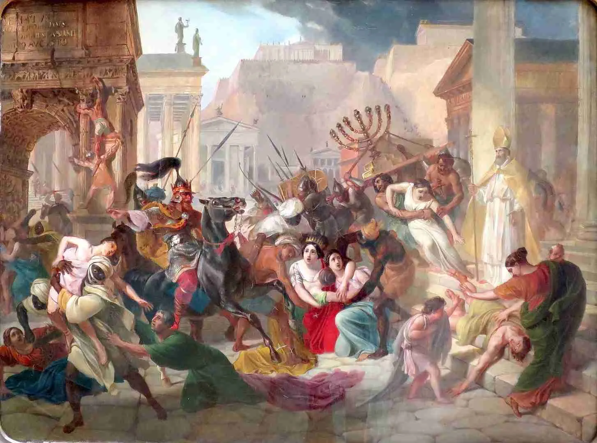
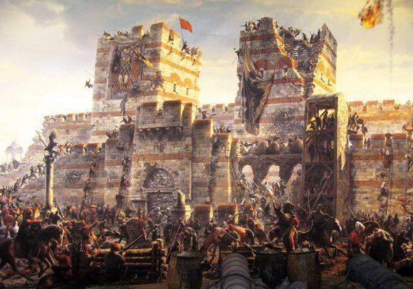
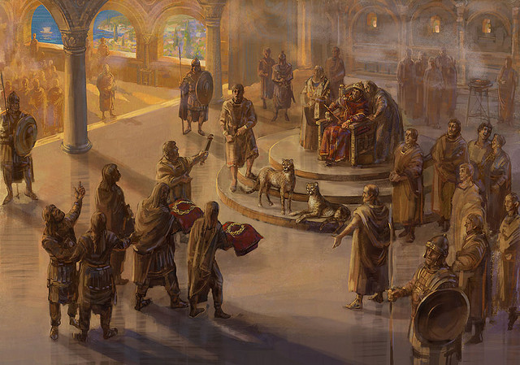
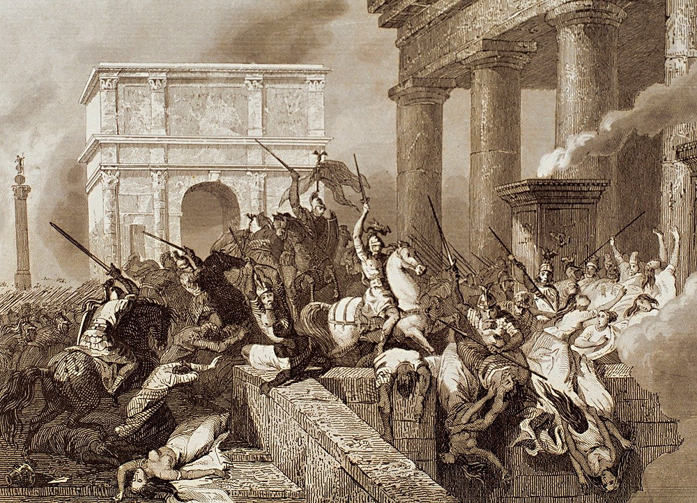
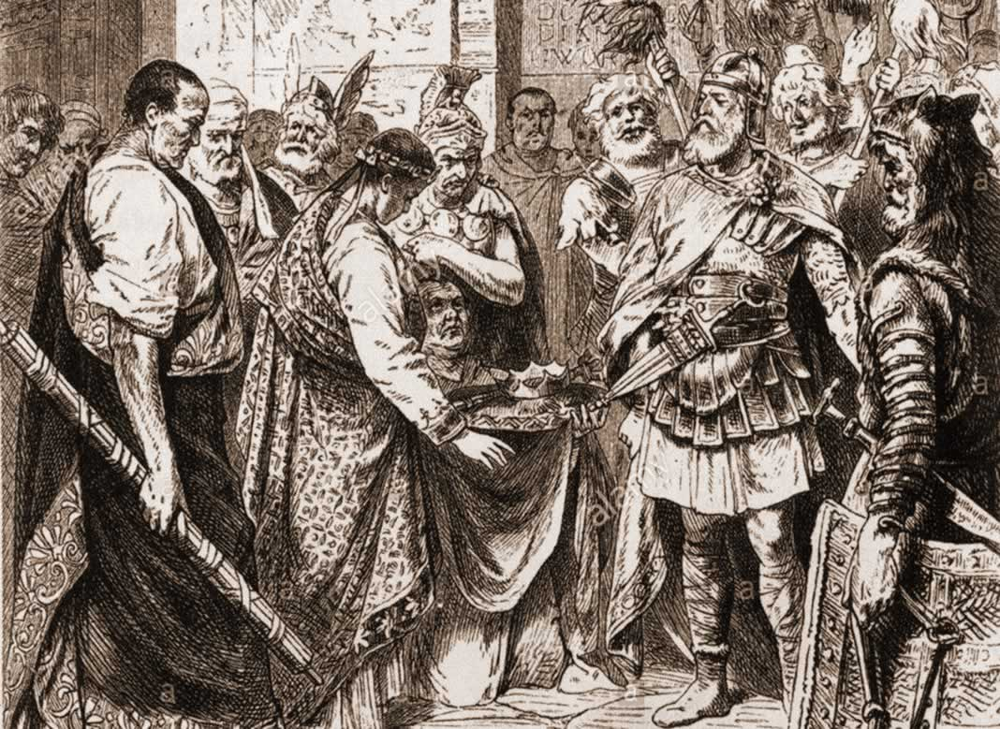

La Caída del Imperio Romano de Occidente (476 d.C.)
La Caída del Imperio Romano de Occidente en el año 476 d.C. es un evento que tradicionalmente marca el fin de la Antigüedad y el comienzo de la Edad Media en Europa. Aunque no fue un suceso repentino, sino el resultado de un largo proceso de declive, la deposición del último emperador romano de Occidente, Rómulo Augústulo, por el caudillo germano Odoacro, es el hito que simbólicamente representa el colapso de una de las mayores civilizaciones de la historia.
---
Contexto: Un Imperio en Crisis
El Imperio Romano, en su vastedad, había enfrentado desafíos durante siglos. Sin embargo, a partir del siglo III d.C., una serie de crisis internas y presiones externas lo llevaron a un deterioro progresivo:
Crisis Económica: Inflación descontrolada, aumento de impuestos, interrupción del comercio y declive de la agricultura.
Inestabilidad Política: Constantes golpes de estado y un rápido sucesión de emperadores, muchos de los cuales eran asesinados, lo que debilitaba la autoridad central.
Problemas Demográficos: Disminución de la población debido a plagas y guerras, lo que afectaba la mano de obra y el reclutamiento militar.
Presión de los Pueblos Bárbaros: Migraciones masivas y constantes incursiones de tribus germánicas (visigodos, vándalos, ostrogodos, hunos, etc.) a lo largo de las fronteras, buscando tierras y riquezas o huyendo de otras tribus.
Sobreextensión y Dificultad para Gobernar: El Imperio era demasiado grande para ser administrado eficientemente desde un solo centro, lo que llevó a su división en Imperio de Oriente y Occidente en el 395 d.C.
Debilitamiento del Ejército: Dependencia creciente de mercenarios bárbaros, lo que diluía la lealtad y la disciplina.
Cambios Sociales y Culturales: La expansión del cristianismo y la pérdida de los valores cívicos tradicionales romanos.
---
Los Últimos Siglos de Decadencia
En el siglo V d.C., el Imperio Romano de Occidente era una sombra de su antiguo esplendor. Las invasiones bárbaras se hicieron más frecuentes y devastadoras:
Saqueo de Roma por los Visigodos (410 d.C.): Bajo el mando de Alarico, los visigodos saquearon la "Ciudad Eterna", un evento de gran impacto psicológico para el mundo romano.
Invasión de los Vándalos (455 d.C.): Roma fue nuevamente saqueada, esta vez por los vándalos de Genserico.
Ascenso de Hunos y otros pueblos: La presión de los Hunos de Atila empujó a otras tribus germánicas hacia el territorio romano.
Fragmentación Territorial: Provincias enteras (Britania, Galia, Hispania, África del Norte) cayeron bajo el control de reinos bárbaros.
Los emperadores de Occidente se volvieron meros títeres en manos de sus generales bárbaros, que eran la verdadera fuerza detrás del trono. El control efectivo sobre los territorios romanos se redujo drásticamente.
---
El Evento de 476 d.C.
El 475 d.C., un general romano llamado Orestes depuso al emperador Nepote y colocó en el trono a su propio hijo, el joven Rómulo Augústulo . Sin embargo, Orestes se negó a conceder tierras a sus tropas mercenarias bárbaras, lo que provocó una rebelión.
El 28 de agosto de 476 d.C. , el caudillo germano Odoacro , líder de los hérulos (una tribu germánica), derrotó y asesinó a Orestes. El 4 de septiembre de 476 d.C. , Odoacro depuso a Rómulo Augústulo, enviándolo a un exilio pacífico. En lugar de nombrar un nuevo emperador títere, Odoacro envió las insignias imperiales a Zenón, el emperador de Oriente en Constantinopla, reconociendo su autoridad y estableciéndose como Rey de Italia .
Este acto, aunque no fue una conquista violenta de la ciudad ni una revolución cultural inmediata, marcó el fin de la línea de emperadores romanos en Occidente y la disolución de la estructura política imperial en esta parte del mundo.
---
Consecuencias y Legado
La Caída de Roma tuvo consecuencias profundas y duraderas:
Fragmentación Política de Europa: Dio paso al surgimiento de numerosos reinos germánicos en lo que había sido el territorio imperial (Ostrogodos en Italia, Visigodos en Hispania, Francos en Galia, Vándalos en África, etc.).
Inicio de la Edad Media: Marcó el comienzo de un período de transición en Europa, caracterizado por una menor urbanización, la ruralización de la economía, el declive del comercio y la paulatina fusión de las culturas romana y germánica.
Supervivencia del Imperio Romano de Oriente: El Imperio Romano de Oriente (Bizantino), con capital en Constantinopla, continuó existiendo durante mil años más, preservando la cultura clásica y actuando como un baluarte contra invasiones.
Ascenso de la Iglesia Católica: Ante el vacío de poder central, la Iglesia Católica Romana ganó una enorme influencia, convirtiéndose en una de las principales fuerzas unificadoras en Europa occidental.
Preservación de la cultura romana: Aunque el Imperio político cayó, muchos aspectos de la cultura, el derecho, el idioma latín y la administración romana sobrevivieron y se fusionaron con las costumbres germánicas, dando origen a las nuevas sociedades medievales.
La Caída de Roma es un tema de constante debate historiográfico, con diferentes teorías que enfatizan diversas causas. Sin embargo, su importancia como punto de inflexión en la historia occidental es innegable.
Galería de Imágenes Históricas





Trivia Histórica sobre la Caída del Imperio Romano de Occidente